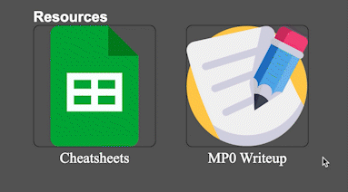

Overview
- Git clone the files from Github
- Start edit the index.html and CSS file
- Editing the color, edge, size, and font types
- Start edit the sub-pages
- Rename the folders and files
- Commit the change
- Git push the change
Screenshot

Issue
- In order to put text in center, I found out that text-align: center
-
In order to put image in center, I used .center {
display: block;
margin-left: auto;
margin-right: auto;
width: 50%;
}
- In order to to put image titles at bottom of images, used the div to start new line
CSS Transition
- For those images that link to sub-pages, when users drag their nouse to images, brightness will down to 50%;
- For those image titles, when users touch those texts, font-size will grow larger to 36px;

Idea and Future
- Continue develop this webpage and add more CSS content inside, including the transition
- For each project, create the individual sub-pages
- Study how to make the icon and button
- Study how to make search bar